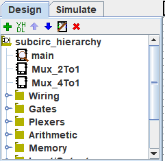
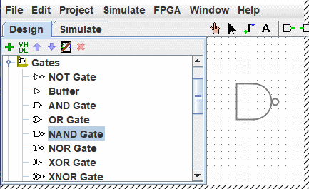
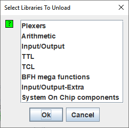

上一节: 菜单
资源管理器窗口
|  | 资源管理器窗口有两个功能。 它可以在视图 模拟 中呈现正在仿真的电路，或者像这里一样在列表顶部的电路和文件夹代表的较低库中 图标。 这些库包含您可以在项目中使用的工具。 |
要访问库的组件，只需 双击 相应的文件夹或 单击 小键来打开库 然后通过 右键单击 选择该工具。 然后将鼠标光标移动到画布上，该工具的幻影绘图将跟随鼠标光标，直到您在表面上进行最后一次单击以将其放置到所选位置。
下面，我打开了 Gates 库并从中选择了 NAND 工具。 您可以看到 Logisim-evolution 现在已准备好将 NAND 门添加到电路中。

如果您浏览 Gates 库中的选项，您会发现我们没有必要提前开发 XOR 电路：它内置于 Logisim-evolution 中。
当您创建项目时，它会自动包含几个库：
- 接线： 直接与导线交互的组件。
- 门： 执行简单逻辑功能的组件。
- 复用器： 更复杂的组合组件，例如复用器和解码器。
- 算术： 执行算术的组件。
- 内存： 记忆数据的组件，如触发器、寄存器和 RAM。
- 输入/输出： 为了与用户交互而存在的组件。
- TTL： 74 系列的经典 TTL 组件位于 DIL 外壳中。
- TCL： 我暂时没有记录
- HDL-IP： 我暂时没有记录 BFH 巨型功能： 我暂时没有记录
- 输入/输出额外： 我暂时没有记录
- 片上系统组件： 嵌入在某些 FPGA 中的组件
库
Logisim-evolution 还允许您添加更多库，使用菜单 | Project | → | Load Library | 或通过 < b class="tkeybd">左键单击 项目资源管理器的根文件夹。 您可以看到 Logisim-evolution 具有三类库。
- 内置库 是随 Logisim-evolution 一起分发的库。 这些记录在 库参考 中。
- Logisim-evolution 库 是在 Logisim-evolution 中构建的项目，并作为 Logisim-evolution 项目保存到磁盘。 您可以在单个项目中开发一组电路（如本指南的 子电路 部分所述），然后将该组电路用作 其他项目的库。
-
JAR 库
是用 Java 开发但不随 Logisim-evolution 分发的库。 您可以下载其他人编写的 JAR 库，也可以按照本指南的
JAR 库
部分中的说明编写自己的 JAR 库。 开发 JAR 库比开发 Logisim-evolution 库困难得多，但组件可以更精美，包括属性和与用户的交互等内容。 内置库（
Base"
除外）是使用与 JAR 库可以使用的相同 API 编写的，因此它们恰当地展示了 JAR 库可以支持的功能范围。
某些 JAR 库在分发时没有任何关于从哪个 Java 类开始的信息。 加载此类 JAR 时，Logisim 将提示您输入类名。 这个类名应该由向您分发 JAR 文件的人提供。
要删除库，请选择菜单 | Project | → | Unload Library ... | 。 Logisim-evolution 将阻止您卸载包含电路中使用的组件、出现在工具栏中或映射到鼠标按钮的组件的库。

也可以通过在库上按 左键单击 来禁用它。
顺便说一句，从技术上讲，库包含工具，而不是组件。 因此，在 Base 库中，您将找到
Poke
工具 (
 )，
编辑
工具 (
)，以及其他不直接对应于各个组件的工具。 不过，大多数库仅包含用于添加单个组件的工具。
)，
编辑
工具 (
)，以及其他不直接对应于各个组件的工具。 不过，大多数库仅包含用于添加单个组件的工具。
下一节: 工具栏 .